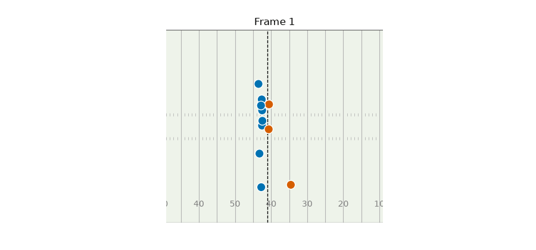

flowchart LR CT["combine_tracking<br/>drill x frame"] -->|nfl_id| P["players<br/>combine_results<br/>career_successes"] P -->|nfl_id| PP["player_play<br/>player x play"] G["games<br/>season_type"] -->|game_id| PP PP -->|game_id, play_id, nfl_id| GT["game_tracking<br/>player x play x frame"]
Big Data Bowl 2027: Getting Started with Tracking Data
From the Combine to Sundays, in R and Python
2026-01-01
Anatomy of a tracking row

| Column | Meaning |
|---|---|
x, y |
position in yards (end zones are 0–10 and 110–120) |
s |
speed (yd/s) |
a |
acceleration (yd/s²) |
dis |
distance since the last frame (yd) |
dir |
direction of motion (°) |
o |
direction the player faces (°) |
event |
ball_snap, pass_forward, tackle, … |
Angles: 0° points to +y, and they increase clockwise. The Combine file has no o.
Before and after
ex_std <- ex_raw |> add_frame_id() |> standardize_tracking(reg_plays)
bind_rows(Raw = ex_raw, Standardized = ex_std, .id = "version") |>
ggplot(aes(x, y, group = nfl_id)) +
annotate("rect", xmin = 0, xmax = 120, ymin = 0, ymax = 160 / 3,
fill = NA, colour = "grey60") +
geom_path(alpha = 0.7) +
geom_point(data = \(d) slice_max(d, time, by = c(version, nfl_id)), size = 2) +
facet_wrap(~version, ncol = 1) +
coord_fixed() +
labs(x = "x (yards)", y = "y (yards)")
ex_std = standardize_tracking(add_frame_id(ex_raw), reg_plays)
fig, axes = plt.subplots(2, 1, figsize=(9, 6.5), sharex=True)
for ax, (label, df) in zip(axes, [("Raw", ex_raw), ("Standardized", ex_std)]):
ax.add_patch(plt.Rectangle((0, 0), 120, 160 / 3, fill=False, ec="0.6"))
for _, path in df.sort_values("time").groupby("nfl_id"):
ax.plot(path.x, path.y, color="0.2", alpha=0.7)
ax.scatter(path.x.iloc[-1], path.y.iloc[-1], color="0.1", s=12)
ax.set_title(label)
ax.set_aspect("equal")plt.show()
plot_play(): one frame, with trails
plot_play <- function(play_df, frame = max(play_df$frame_id), arrow_len = 2.5) {
now <- filter(play_df, frame_id == frame)
los <- play_df$los_x[1]
ggplot() +
geom_field(xlim = play_xlim(play_df$x)) +
annotate("segment", x = los, xend = los, y = 0, yend = 160 / 3, linetype = "dashed") +
geom_path(data = filter(play_df, frame_id <= frame),
aes(x, y, group = nfl_id, colour = side), alpha = 0.35) +
geom_segment(data = now, aes(x, y, xend = x + arrow_len * dir_x,
yend = y + arrow_len * dir_y, colour = side),
arrow = arrow(length = unit(0.08, "inches"))) +
geom_point(data = now, aes(x, y, fill = side), shape = 21, size = 4, colour = "white") +
geom_text(data = now, aes(x, y + 1.7, label = lined_up_position), size = 2.6) +
scale_colour_manual(values = side_cols, aesthetics = c("colour", "fill")) +
labs(colour = NULL, fill = NULL)
}
throw_frame <- ex_play_df |> filter(event == "pass_forward") |> pull(frame_id) |> first()
plot_play(ex_play_df, frame = throw_frame)
def plot_play(play_df, frame=None, arrow_len=2.5, ax=None):
play_df = play_df.sort_values("frame_id")
frame = play_df.frame_id.max() if frame is None else frame
ax = ax or plt.subplots(figsize=(10, 4.8))[1]
draw_field(ax, xlim=play_xlim(play_df.x))
ax.axvline(play_df.los_x.iloc[0], color="k", ls="--", lw=1)
for (_, side), path in play_df[play_df.frame_id <= frame].groupby(["nfl_id", "side"]):
ax.plot(path.x, path.y, color=SIDE_COLS[side], alpha=0.35)
now = play_df[play_df.frame_id == frame]
cols = now.side.map(SIDE_COLS).tolist()
ax.quiver(now.x, now.y, arrow_len * now.dir_x, arrow_len * now.dir_y, color=cols,
angles="xy", scale_units="xy", scale=1, width=0.003)
ax.scatter(now.x, now.y, c=cols, s=90, edgecolor="white", zorder=3)
for _, p in now.iterrows():
ax.text(p.x, p.y + 1.7, p.lined_up_position, ha="center", fontsize=7)
for side, col in SIDE_COLS.items():
ax.scatter([], [], c=col, label=side)
ax.legend(loc="upper left", bbox_to_anchor=(1, 1), frameon=False)
return ax
throw_frame = ex_play_df.loc[ex_play_df.event == "pass_forward", "frame_id"].iloc[0]
plot_play(ex_play_df, frame=throw_frame)plt.show()
Animate the play
The fastest way to catch bugs in your cleaning: watch it.
los <- ex_play_df$los_x[1]
anim <- ggplot(ex_play_df) +
geom_field(xlim = play_xlim(ex_play_df$x)) +
annotate("segment", x = los, xend = los, y = 0, yend = 160 / 3, linetype = "dashed") +
geom_point(aes(x, y, fill = side, group = nfl_id),
shape = 21, size = 5, colour = "white") +
scale_fill_manual(values = side_cols) +
labs(fill = NULL, title = "Frame {round(frame_time)}") +
transition_time(frame_id)
play_gif <- animate(anim, nframes = n_distinct(ex_play_df$frame_id), fps = 10,
width = 900, height = 420, units = "px", res = 100, # units matter
renderer = gifski_renderer()) # when knitting!
anim_save("figs/play_r.gif", play_gif)
play = ex_play_df.sort_values("frame_id")
fig, ax = plt.subplots(figsize=(9, 4.2))
draw_field(ax, xlim=play_xlim(play.x))ax.axvline(play.los_x.iloc[0], color="k", ls="--", lw=1)dots = ax.scatter([], [], s=110, edgecolor="white", zorder=3)
def update(frame):
now = play[play.frame_id == frame]
dots.set_offsets(now[["x", "y"]].to_numpy())
dots.set_facecolor(now.side.map(SIDE_COLS).tolist())
ax.set_title(f"Frame {frame}")
return (dots,)
FuncAnimation(fig, update, frames=play.frame_id.unique()).save(
"figs/play_py.gif", writer=PillowWriter(fps=10))
plt.close(fig)
A receiver’s NFL route tree: plot
keep_routes <- puka_routes |> count(route_ran) |> filter(n >= 20) |> pull(route_ran)
puka_tree |>
filter(route_ran %in% keep_routes) |>
ggplot(aes(toward_sideline, downfield, group = interaction(game_id, play_id))) +
geom_path(alpha = 0.12, colour = "#0072B2") +
facet_wrap(~route_ran, nrow = 2) +
coord_fixed(xlim = c(-20, 20), ylim = c(-3, 30)) +
labs(x = "← toward the middle · yards · toward the sideline →",
y = "Yards downfield",
title = "Puka Nacua's NFL routes, snap to throw (2023–25 regular season)")
counts = puka_routes.route_ran.value_counts()
keep_routes = sorted(counts[counts >= 20].index)
fig, axes = plt.subplots(2, 5, figsize=(11, 5.2), sharex=True, sharey=True)
for ax, route in zip(axes.flat, keep_routes):
for _, path in puka_tree[puka_tree.route_ran == route].groupby(["game_id", "play_id"]):
ax.plot(path.toward_sideline, path.downfield, color="#0072B2", alpha=0.12, lw=0.8)
ax.set_title(route, fontsize=10)
ax.set_xlim(-20, 20)
ax.set_ylim(-3, 30)
ax.set_aspect("equal")for ax in axes.flat[len(keep_routes):]:
ax.axis("off")fig.supxlabel("← toward the middle · yards · toward the sideline →")fig.supylabel("Yards downfield")fig.suptitle("Puka Nacua's NFL routes, snap to throw (2023–25 regular season)")plt.show()
What a 40 looks like
fastest <- forty |> slice_min(official_40, n = 1, with_ties = FALSE)
fastest_name <- players$display_name[players$nfl_id == fastest$nfl_id]
mph <- 3600 / 1760 # yd/s -> mph
combine_trk |>
filter(drill_name == "FORTY_YARD_DASH", nfl_id == fastest$nfl_id) |>
ggplot(aes(t, s * mph, colour = factor(attempt))) +
geom_line(linewidth = 1.2) +
geom_vline(data = filter(forty_attempts, nfl_id == fastest$nfl_id),
aes(xintercept = tracked_40, colour = factor(attempt)), linetype = "dotted") +
geom_vline(xintercept = fastest$official_40, linetype = "dashed") +
annotate("text", x = fastest$official_40, y = 4, label = "official time ",
hjust = 1) +
scale_colour_manual(values = c("#0072B2", "#E69F00", "#009E73")) +
labs(x = "Seconds since the clip starts", y = "Speed (mph)", colour = "Attempt",
title = str_glue("{fastest_name}: official 40 of {fastest$official_40} s"),
subtitle = "Dotted lines: when the tracked path passes 40 yards")
fastest = forty.nsmallest(1, "official_40").iloc[0]
fastest_id = int(fastest.nfl_id)
fastest_name = players.set_index("nfl_id").display_name[fastest_id]
MPH = 3600 / 1760 # yd/s -> mph
colours = ["#0072B2", "#E69F00", "#009E73"]
runs = dash[dash.nfl_id == fastest_id]
fig, ax = plt.subplots(figsize=(9, 4.4))
for (att, d), col in zip(runs.groupby("attempt"), colours):
ax.plot(d.t, d.s * MPH, lw=2, color=col, label=f"Attempt {att}")
t40 = forty_attempts.query("nfl_id == @fastest_id and attempt == @att").tracked_40
ax.vlines(t40, 0, 25, color=col, ls=":")ax.axvline(fastest.official_40, color="k", ls="--")ax.text(fastest.official_40, 4, "official time ", ha="right")ax.set(xlabel="Seconds since the clip starts", ylabel="Speed (mph)",
title=f"{fastest_name}: official 40 of {fastest.official_40} s")ax.legend(frameon=False)plt.show()
Combine routes vs. NFL routes
Normalize each Combine attempt: start at (0, 0), then rotate so that the first 3 yards of the stem point straight up.
normalize_attempt <- function(d) {
i <- which(d$path_length >= 3)[1]
theta <- atan2(d$y[i] - d$y[1], d$x[i] - d$x[1])
dx <- d$x - d$x[1]
dy <- d$y - d$y[1]
mutate(d, downfield = dx * cos(theta) + dy * sin(theta),
lateral = dx * sin(theta) - dy * cos(theta)) # + = runner's right
}
puka_combine <- combine_trk |>
filter(nfl_id == puka_id, str_detect(drill_name, "ROUTE|FADE")) |>
group_by(drill_name, attempt, event_id) |>
group_modify(\(d, key) normalize_attempt(d)) |>
ungroup() |>
# LEFT/RIGHT in a drill name is the side he lines up on (a Slant Left breaks
# to his right), so we can put both panels on the same "toward sideline" axis
mutate(toward_sideline = if_else(str_ends(drill_name, "LEFT"), -lateral, lateral))
labels <- puka_combine |> # last point of attempt 1 inside the window
filter(attempt == min(attempt), abs(toward_sideline) < 21, downfield < 33,
.by = drill_name) |>
slice_max(t, n = 1, by = drill_name) |>
mutate(label = str_to_title(str_replace_all(str_remove(drill_name, "_ROUTE"), "_", " ")))
p_combine <- ggplot(puka_combine, aes(toward_sideline, downfield)) +
geom_path(aes(group = interaction(drill_name, attempt, event_id), colour = drill_name),
show.legend = FALSE) +
geom_text(data = labels, aes(label = label), size = 2.6, vjust = -0.4) +
labs(title = "Combine route drills (vs. air)", y = "Yards downfield",
x = "Yards (+ = toward sideline)")
p_nfl <- ggplot(puka_tree, aes(toward_sideline, downfield)) +
geom_path(aes(group = interaction(game_id, play_id)), alpha = 0.05) +
labs(title = "NFL routes (snap to throw)", x = "Yards (+ = toward sideline)", y = NULL)
(p_combine | p_nfl) & coord_fixed(xlim = c(-25, 25), ylim = c(-3, 35))
def normalize_attempt(d):
d = d.sort_values("t")
i = np.argmax(d.path_length.to_numpy() >= 3)
dx, dy = d.x - d.x.iloc[0], d.y - d.y.iloc[0]
theta = np.arctan2(dy.iloc[i], dx.iloc[i])
return d.assign(downfield=dx * np.cos(theta) + dy * np.sin(theta),
lateral=dx * np.sin(theta) - dy * np.cos(theta)) # + = runner's right
routes_run = combine_trk[(combine_trk.nfl_id == puka_id)
& combine_trk.drill_name.str.contains("ROUTE|FADE")]
puka_combine = pd.concat(normalize_attempt(d) for _, d in
routes_run.groupby(["drill_name", "attempt", "event_id"]))
# LEFT/RIGHT in a drill name is the side he lines up on (a Slant Left breaks
# to his right), so we can put both panels on the same "toward sideline" axis
puka_combine["toward_sideline"] = np.where(puka_combine.drill_name.str.endswith("LEFT"),
-puka_combine.lateral, puka_combine.lateral)
fig, (ax1, ax2) = plt.subplots(1, 2, figsize=(10, 5.4), sharex=True, sharey=True)
for (drill, att, _), d in puka_combine.groupby(["drill_name", "attempt", "event_id"]):
ax1.plot(d.toward_sideline, d.downfield, lw=1.3)
inside = d[(d.toward_sideline.abs() < 21) & (d.downfield < 33)] # last point in view
if att == puka_combine.loc[puka_combine.drill_name == drill, "attempt"].min():
label = drill.replace("_ROUTE", "").replace("_", " ").title()
ax1.text(inside.toward_sideline.iloc[-1], inside.downfield.iloc[-1] + 0.6, label,
fontsize=6.5, ha="center")for _, d in puka_tree.groupby(["game_id", "play_id"]):
ax2.plot(d.toward_sideline, d.downfield, color="0.2", alpha=0.05, lw=0.8)ax1.set(title="Combine route drills (vs. air)", xlabel="Yards (+ = toward sideline)",
ylabel="Yards downfield")ax2.set(title="NFL routes (snap to throw)", xlabel="Yards (+ = toward sideline)")for ax in (ax1, ax2):
ax.set_xlim(-25, 25)
ax.set_ylim(-3, 35)
ax.set_aspect("equal")plt.show()
LEFT/RIGHT in the drill names is the side the receiver lines up on, not the direction of the break. That was inferred from the traces, which is why you plot before you trust a label. The Combine routes are run against air and continue past the catch. The NFL routes stop at the throw.
Does Combine speed show up on Sundays?
ggplot(link, aes(peak_speed_mph, game_top_speed_mph)) +
geom_smooth(method = "lm", se = FALSE, colour = "grey40", linewidth = 0.8) +
geom_point(aes(colour = pos_group), size = 2.2, alpha = 0.85) +
scale_colour_manual(values = pos_cols) +
labs(x = "Combine 40: tracked peak speed (mph)",
y = "NFL games: 99th-percentile speed (mph)", colour = NULL,
title = "Fast at the Combine, fast on Sundays (mostly)")
fig, ax = plt.subplots(figsize=(9, 4.8))
for grp, d in link.groupby("pos_group"):
ax.scatter(d.peak_speed_mph, d.game_top_speed_mph, s=22, alpha=0.85,
color=POS_COLS[grp], label=grp)slope, intercept = np.polyfit(link.peak_speed_mph, link.game_top_speed_mph, 1)
xs = np.linspace(link.peak_speed_mph.min(), link.peak_speed_mph.max(), 50)
ax.plot(xs, intercept + slope * xs, color="0.4", lw=1)ax.set(xlabel="Combine 40: tracked peak speed (mph)",
ylabel="NFL games: 99th-percentile speed (mph)",
title="Fast at the Combine, fast on Sundays (mostly)")ax.legend(frameon=False, loc="upper left", bbox_to_anchor=(1, 1))plt.show()